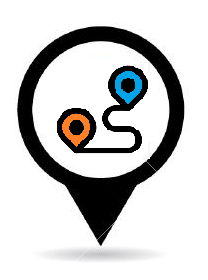

<!--
  Generated template for the ModalDirectoryProximityModePage page.

  See http://ionicframework.com/docs/components/#navigation for more info on
  Ionic pages and navigation.
-->
<ion-header>

    <ion-buttons start>  
               
        <!-- <button  ion-fab mini><ion-icon name="home"></ion-icon></button>          
        <button  ion-fab mini (click)="openModalRoute()" onclick="setCoordinatesMode()"><ion-icon name="home"></ion-icon></button> -->
        <p>
          <button ion-button color="light" (click)="openModalDirectory()" icon-only title="Busqueda Directorio" style="z-index: 1000;">
              <ion-avatar item-start>
                  
                </ion-avatar>
          </button>
          

            <button ion-button color="light" onclick="setModalSelectedDirectDistance()" (click)="openModalDirectoryDistanceMode()" title="Busqueda Distancia" icon-only>
                <ion-avatar item-start>
                    
                  </ion-avatar>
              </button>

              <button ion-button color="light" title="Busqueda Proximidad" icon-only>
                  <ion-avatar item-start>
                      
                    </ion-avatar>
                </button>

                <button ion-button color="light" (click)="openProfessorPage()" title="Busqueda de Profesores" icon-only>
                    <ion-avatar item-start>
                        
                      </ion-avatar>
                </button>

                <button ion-button color="light" (click)="openModalRoute()" title="Trazar ruta" icon-only>
                    <ion-avatar item-start>
                        
                      </ion-avatar>
                  </button>

                  <button ion-button (click)='openModalReport()' color="light" title="Reporte" icon-only>
                    <ion-avatar item-start>
                        
                      </ion-avatar>
                  </button>

                <button ion-button color="light" (click)="closeModal()" style="float: right;" ><ion-icon name="close"></ion-icon></button>
     

        </p>
    <!-- <button (click)="closeModal()" icon-only class="closeButtom"> -->
        
          
          
      <!-- <ion-icon name="close"></ion-icon>
    </button> -->
  </ion-buttons>

</ion-header>


<ion-content padding>
    <ion-title>Directorio Proximidad</ion-title>
    
  <ion-list>   
    <input id="directoryProxPlace" type="text" class="form-control" placeholder="Buscar">
    <input id="directoryProxMaxFind" type="text" class="form-control" placeholder="Catidad de respuestas cercanas">  

    <input id="directoryProxCercanoA" type="text" class="form-control" placeholder="Cercano a">
  </ion-list>
    
      <label id="coordinateLabel" style="float:left;font-size: 1.8rem;margin: 8px;color: #404040">Seleccione punto: </label>
      <button  ion-fab mini  onclick="setModalSelectedDirectProximity()"><ion-icon name="pin"></ion-icon></button>
      
    
    <button ion-fab mini  onclick="sendModalDirectProximity()"><ion-icon name="send"></ion-icon></button>


   
</ion-content>
